Es wird eine Runde SSP mit der linken Hand gespielt.
Die Hantel Variante
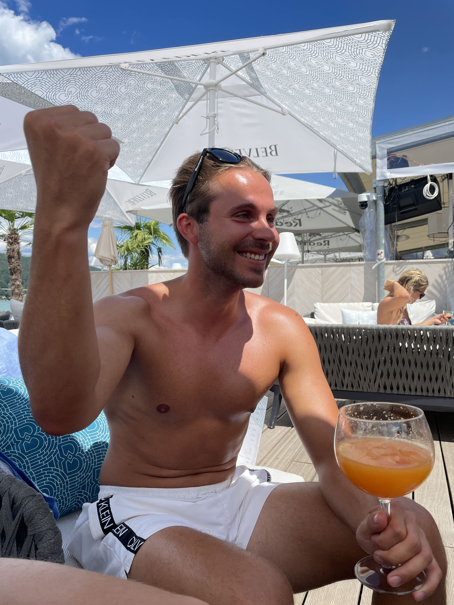
Der Bizeps wird präsentiert. Ansonsten eine normale SSP Runde.
Double Trouble
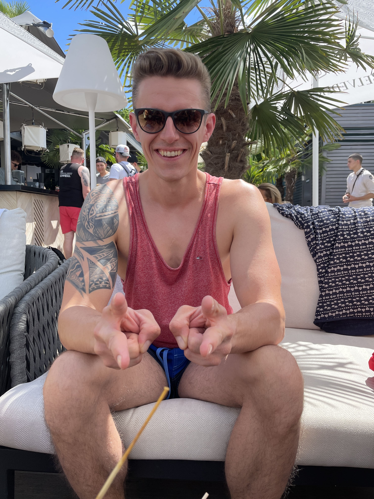
Es wird um eine doppelte Runde gespielt. Dazu werden beide Hände verwendet. Beide Hände zeigen das gleiche Symbol. Falls das irgendwo nicht der Fall sein sollte, hat diese Person automatisch verloren.
Der Kreuzer
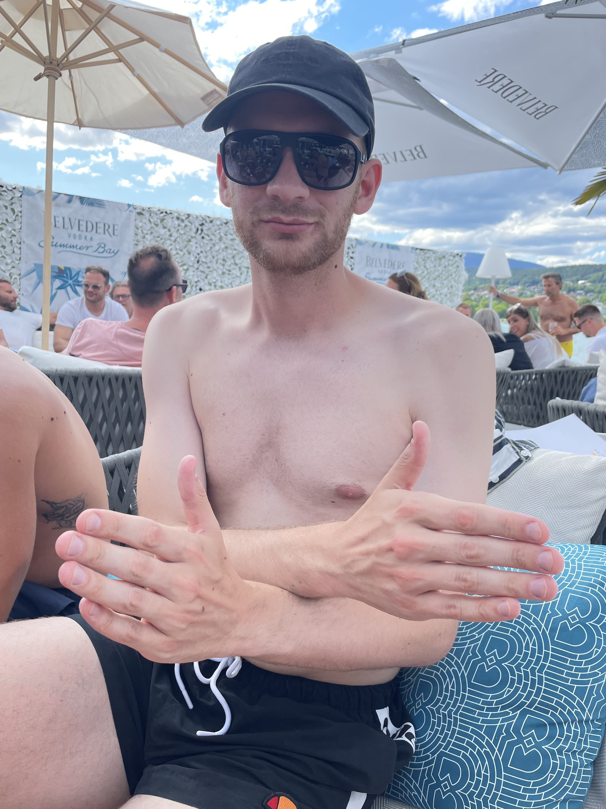
Hände kreuzen und los gehts. Es geht nur um eine Runde, beide Hände müssen das gleiche Symbol zeigen. Falls das irgendwo nicht der Fall sein sollte, hat diese Person automatisch verloren.
Der blinde Bandit
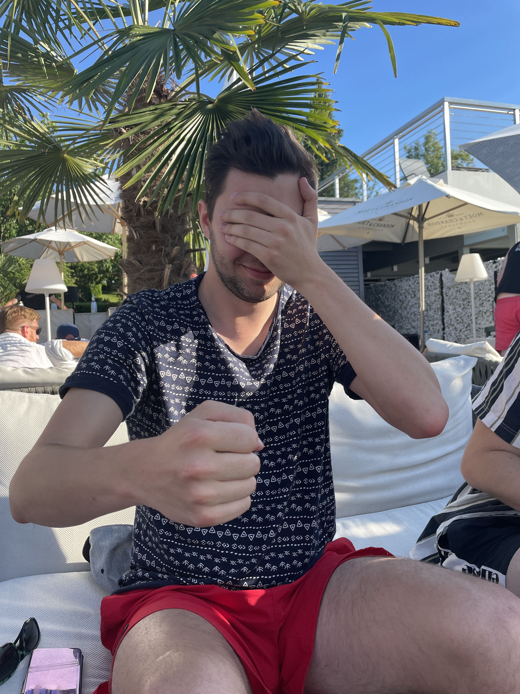
Bei dieser Version wird eine zusätzliche Person als Schiedsrichter benötigt! Alle Personen halten sich mit einer Hand die Augen zu. Mit der anderen Hand wird gespielt. Die Gewinner der jeweiligen Runde werden vom Schiedsrichter berührt. Der Schiedsrichter verkündet den Start jeder Runde und das Ende des Spiels.
Der Captain
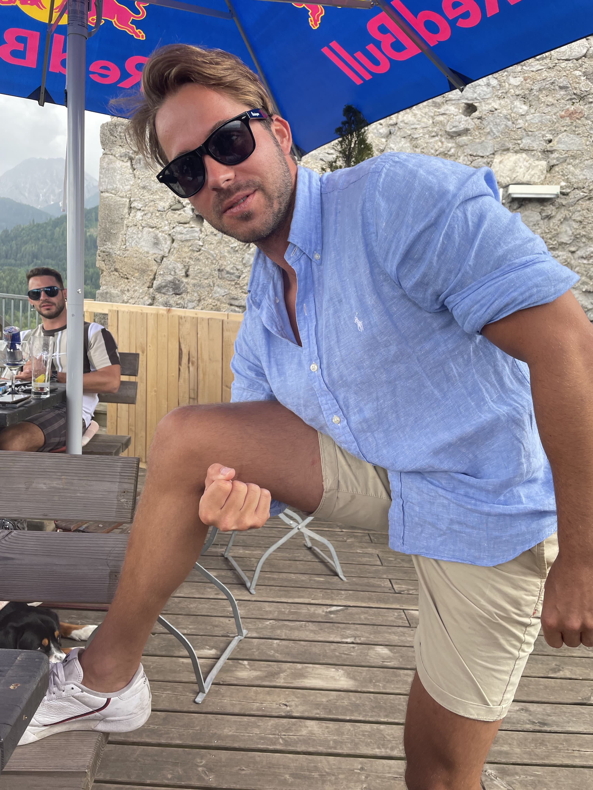
Normale Runde SSP in der Captain Morgan Pose.
Die japanische Variante
Für diese Variante braucht es einen Schiedsrichter. Sollte es keinen geben, muss zuerst gespielt werden bis eine Person gewonnen hat und somit den Schiedsrichter übernehmen kann. Wie im Video ersichtlich ist diese Variante emotional, schnell & zackig. Verzögerungen sollte es nicht geben.
Der Switcher
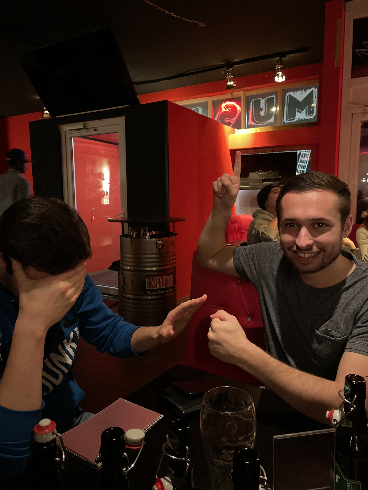
Papier, Stein, Schere - der Spieß wird umgedreht. Der eigentliche Verlierer gewinnt.
Das Rodeo
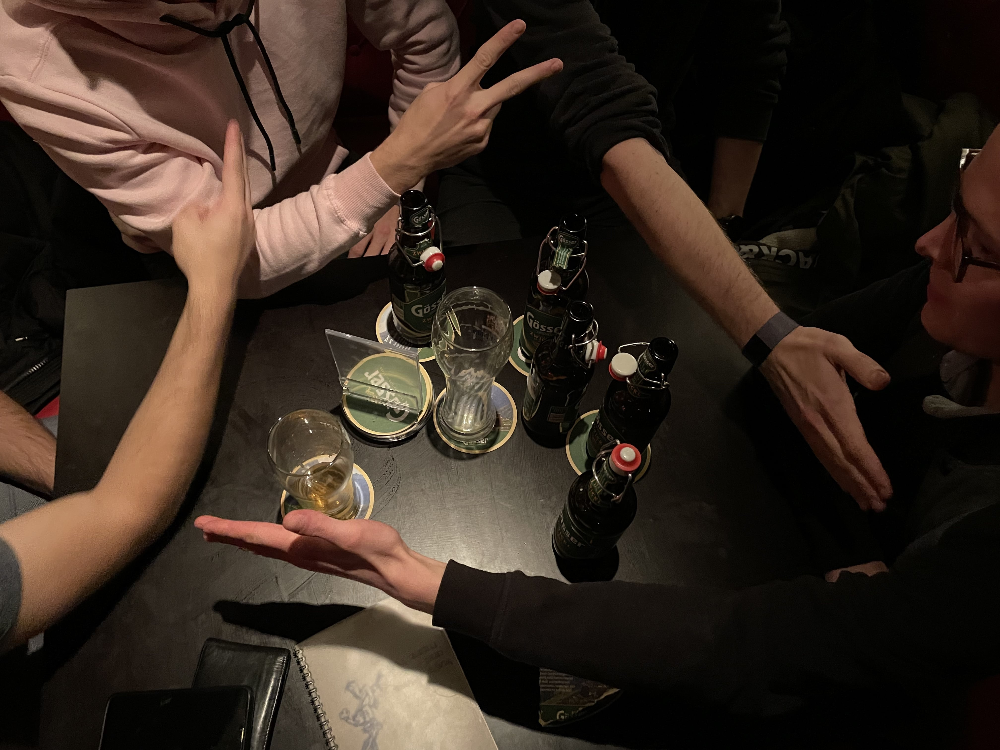
Normales SSP, aber man spielt für seinen linken Nachbarn.
Der T-Rex
Die Hand schaut nur minimal aus dem Kleidungsstück heraus. Wie ein T-Rex.
Die tschechische Variante
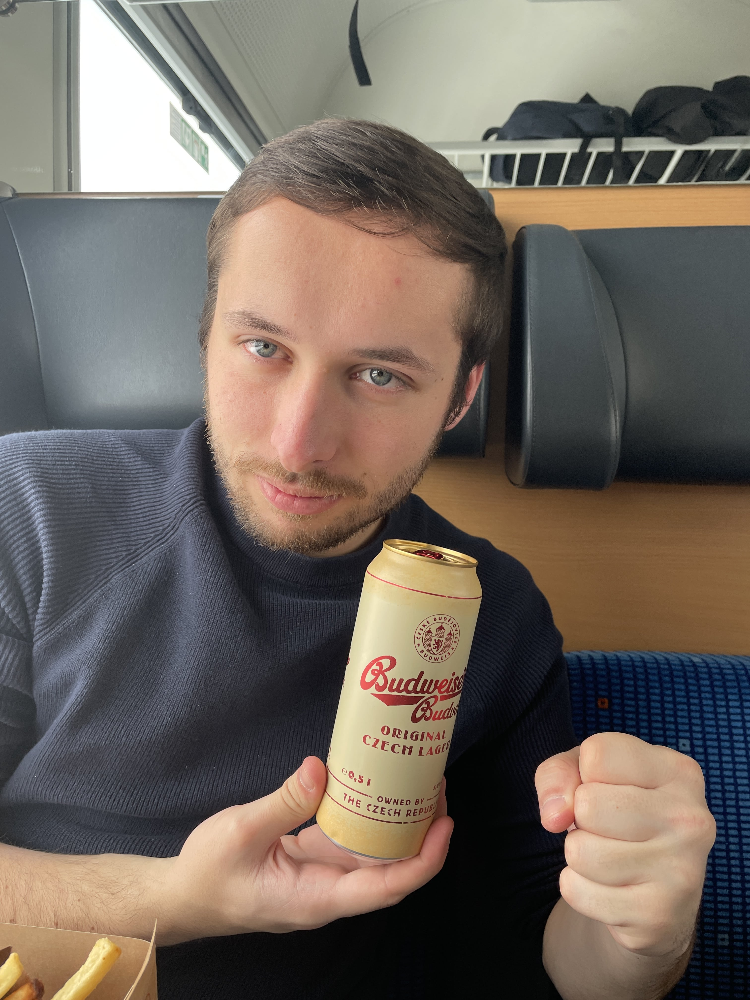
Scherski, Steinski, Papierski wird statt dem normalen Schere, Stein, Papier gesagt. Ganz wichtig - Akzent nicht vergessen.
Die italienische Variante
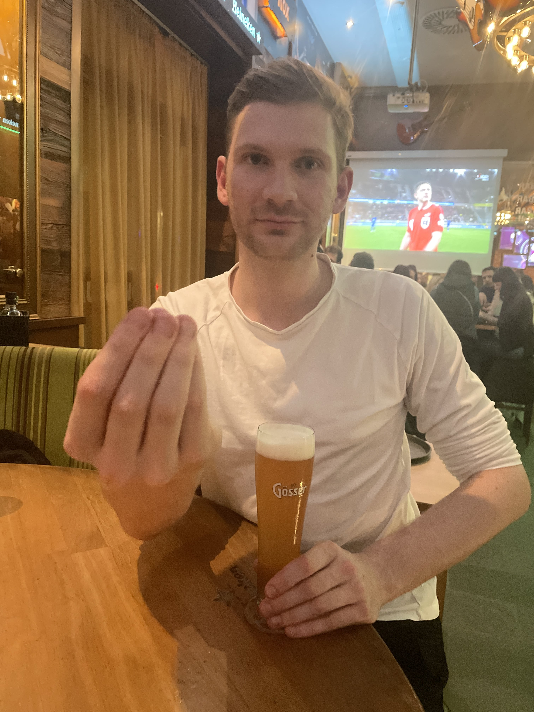
Schere, Steine, Papiere wird statt dem normalen Schere, Stein, Papier gesagt. Ganz wichtig - Akzent nicht vergessen. Zusätzlich muss die Hand am Tisch bleiben und zum Italiener werden.
Schere, Stein Extreme
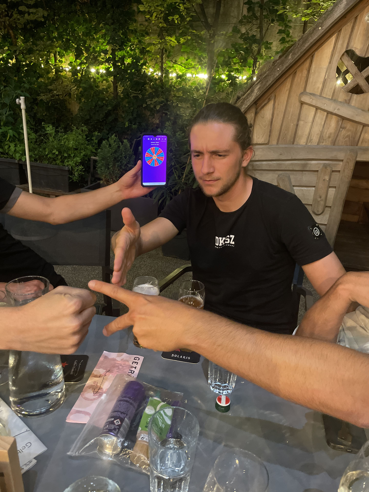
Gespielt wird nur mit Schere und Stein. Durch Zufall wird entschieden ob Stein oder Schere gewinnt. Verwendet jemand Papier hat dieser Teilnehmer automatisch verloren und bezahlt mit einer Runde Getränken und Demütigung durch die Mitspieler.
Kreiz-Deifi Delüx
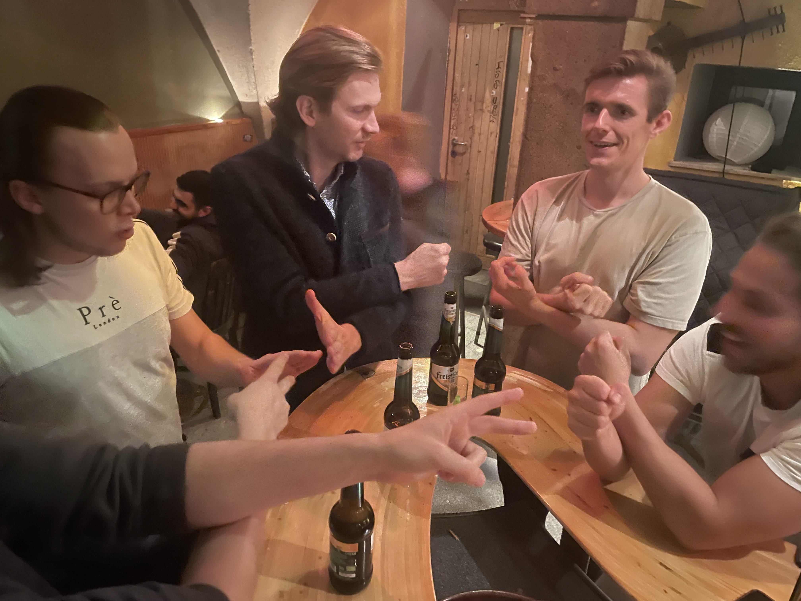
Achtung: Diese Variante ist nicht für Einsteiger geeignet. Kombination aus Kreuzer und Rodeo. Mit der rechten Hand spielt man ein 1:1 gegen den linken Nachbar. Mit der linken Hand gleichzeitig ein 1:1 gegen den rechten Nachbar. Es können auch unterschiedliche Symbole mit beiden Händen genommen werden. Gewinnt eine Hand, scheidet diese aus. Die letzte Hand bezahlt. Wichtig ist beim Spielen immer Kreiz-Deifi Delüx zu sagen.
Die Mühle
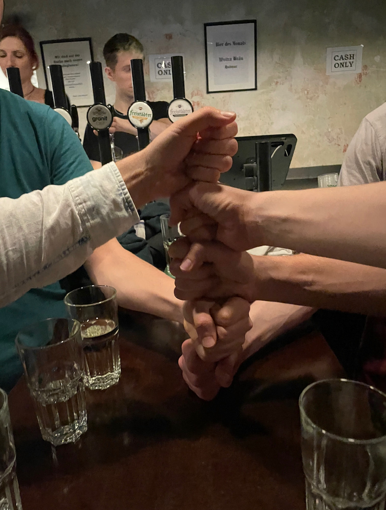
Die Hände werden in Stein Form gestapelt. Anstelle des üblichen „Schere, Stein, Papier“, sagen die Spieler „Kaffee reiben, Kaffee reiben, Schere, Stein, Papier“ und zeigen ihr gewähltes Symbol. Die Entscheidung erfolgt von der untersten Hand nach oben. Die Hand, die gewinnt, bleibt im Spiel, während die Verlierer-Hand ausscheidet (Switcher).
Weitere Varianten
Die Velden Edition
Normales SSP aber es muss eine Runde über 80 Euro bezahlt werden.
Die Distanzrunde
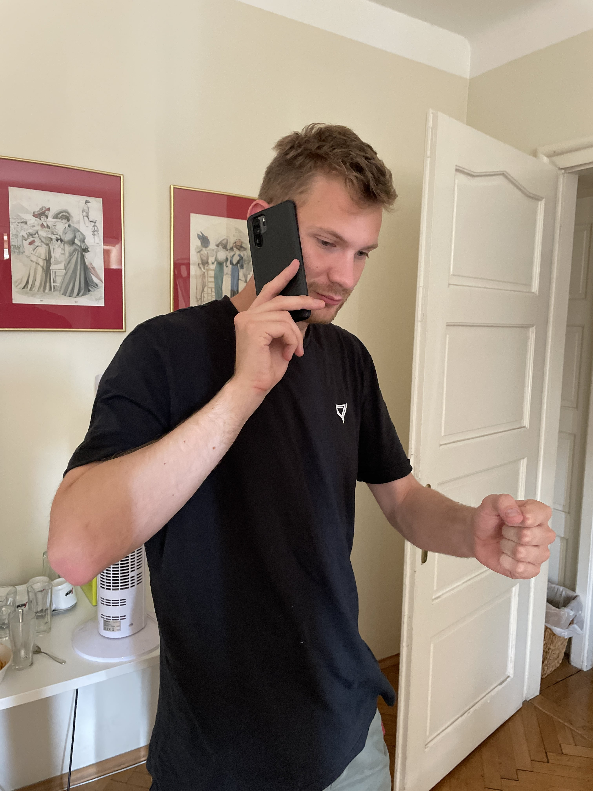
Irgendjemanden aus der Kontaktliste anrufen der eine Runde bezahlt. Es ist auch möglich in verschiedenen Räumen über Videocall zu spielen.
Das Duell
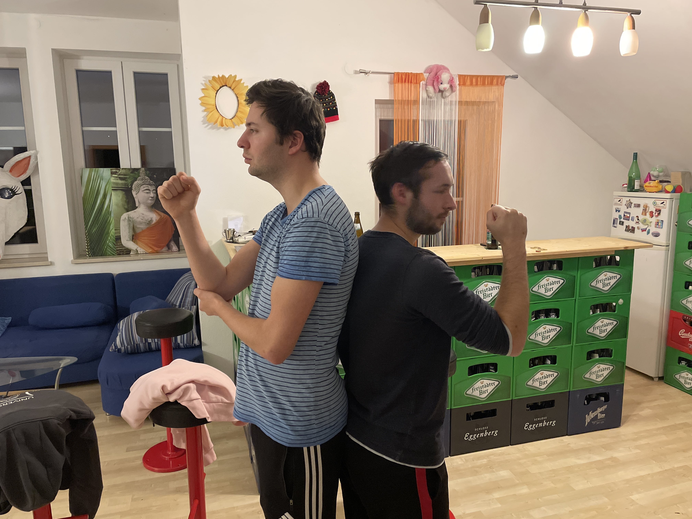
3 Schritte auseinander gehen und los. Ruckartig umdrehen und Symbol zeigen.
SCHERE Stein - Das Duell (Die Legende)
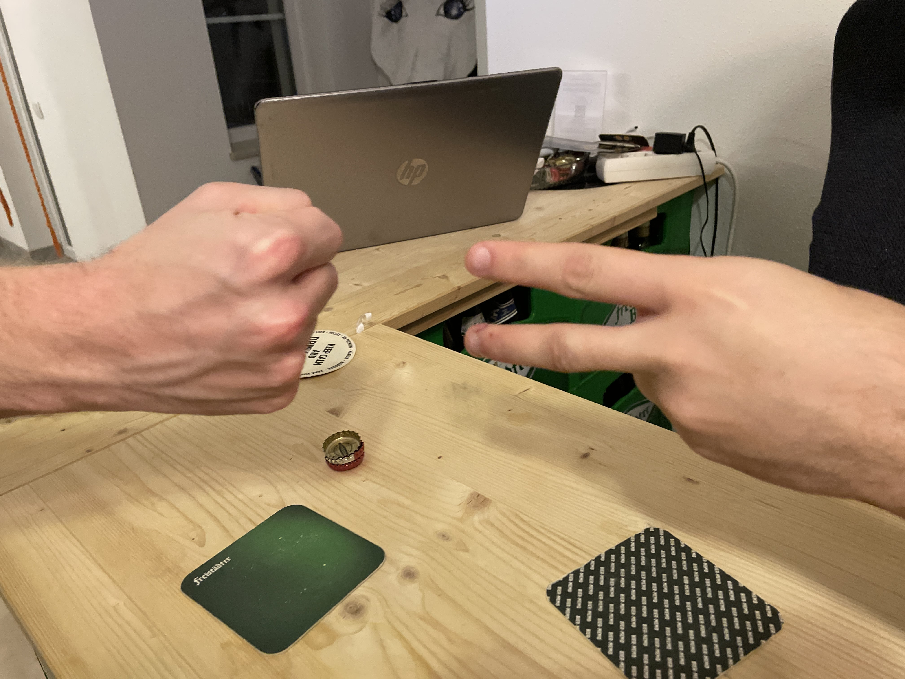
SSP nur ohne Papier.
Der Ägypter
Doppeltes Schnittmesser, Papyrusrolle und eckiger Brocken.